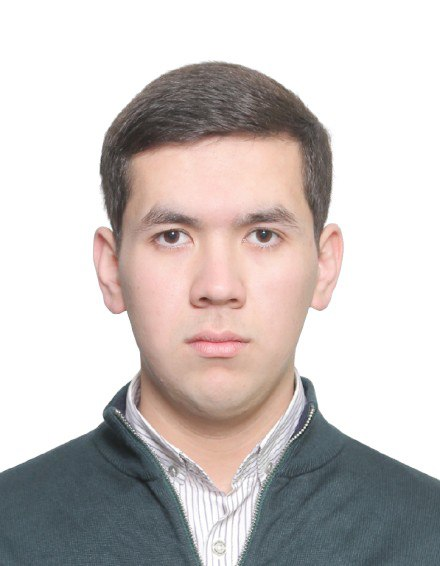

Mukhammad Numonkhujaev

Summary
I am a programmer who works on the principles of creativity, quality, and speed.
Educarion
- High school - 34th school in Namangan city, Uzbekistan 2022-2024
- Bachelor of Software engineering - Kookmin University, Seoul, South Korea 2025-2029
Work & Experience
-
Korean school llc - 2024-2025
- Language Teaching
- Systematic Maintenance
- Volunteered in the Eurasian Clean Cup environmental game.
- When the company 'Atomy' expanded into Uzbekistan, many Koreans visited. During this time, I had the opportunity to meet Team Leader Son Young-ho and worked as an interpreter for over six months.
Skills
Hard skills
-
Language
- Uzbek is mother tongue
- Korean 80%
- Russian 80%
- Turkish 40%
- English 40%
-
Programming Language
Soft skills
- Problem-Solving
- Logical & Critical Thinking
- Teamwork & Communication
- Time Management va Fokusing
Awards and Certifications
- Topik 5 level
- SKA score 669
- Certificate of completion 2024 JEIEI Global Citizen Camp.
- Participated in a writing contest and achieved 4th place.
- Received the Encouragement Award at the Uzbekistan Korean Language National Competition.
- Achieved 4th place in a Korean Language Speaking Competition.
- Wrote an article on the importance of foreign languages, which was published in Issue #8 of 'Namangan Sadosi,' a newspaper operated by Namangan City, on April 27, 2024.
Other